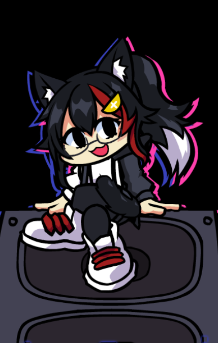

HoloFunk (Hololive Friday Night Funkin')
POR FAVOR, APOIE O CRIADOR ORIGINAL, ESSA TRADUÇÃO APENAS FOI FEITA PARA AJUDAR AS PESSOAS QUE NÃO ENTENDEM INGLÊS. Hololive Funkin', ou HoloFunk para abreviar, é um mod para Friday Night Funkin' construído por uma pequena equipe de pessoas em uma versão do Kade Engine fortemente modificada a ponto de ser quase irreconhecível, apelidada de Myth Engine. Ele apresenta novas músicas, novos oponentes e novas configurações baseadas no mundo e nos personagens de hololive. Se você é tão maluco sobre conhecimento intensivo quanto o diretor principal (eu), siga a ex-Idol Aloe enquanto seu amigo Nene a ajuda a sair das circunstâncias que jogaram a versão do mod do antigo fora do negócio . Se você me odeia por abrir feridas antigas (ou quer uma experiência menos pesada ou apenas como nossa melhor amigo), siga a desastrada detetive Fubuki enquanto ela é manipulada por Daddy Dearest para perseguir uma certa outra protagonista porque a amiga da protagonista roubou algumas Jóias da Mommy Mearest. OBS: PODE EXIGIR UM COMPUTADOR MELHOR DO QUE O MÍNIMO PARA A ATUALIZAÇÃO DA SEMANA 4 OBS 2: A COMPATIBILIDADE COM CONTROLE NÃO FUNCIONA NO MOMENTO OBS 3: DEVIDO A MINHA INEXPERIENCIA COM FNF, ALGUMAS COISAS NÃO ESTÃO TRADUZIDAS, COMO: O MENU DE PAUSA E ALGUMAS IMAGENS E OUTROS MENUS. ★ Como Baixar ★ 1- Baixe o Mod original aqui: https://gamebanana.com/system/html/41250 2- Baixe a Tradução 3- Extraia o .RAR 4- Pegue a pasta "assets" e jogue na pasta do MOD original 5- Abra o jogo e divirta-se!
⬇ Download